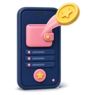
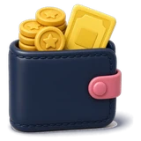
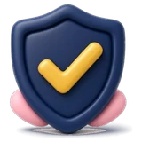
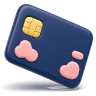

1. Traditional bank savings
Big banks have branches, ATMs and a long history. Their regular savings accounts are deposits insured by PDIC. But the interest is tiny. BPI's Regular Savings pays 0.0625% per year, earned only when the daily balance is at least PHP 5,000, and needs PHP 3,000 to open. On PHP 100,000 that is about PHP 62.50 per year before tax.
Good for: payroll, checks, loans, face-to-face service. Not great for: making idle money grow.

2. Digital banksDigital banks are BSP-licensed banks that operate through an app, without branches. Lower costs and the need to attract depositors let them pay higher rates. Base rates we checked on 2026-11-04 include MariBank at 3.25% (up to PHP 1M), Tonik Solo Stash at 3.25%, GoTyme GoalSave at 3.0% and Maya Savings at a 3% base. Some other app-based banks, like Salmon (4%) and OwnBank (3.8%), also advertise high rates.
Good for: emergency funds and goal savings. Watch for: rate cuts, promo conditions, and transfer fees into the bank.

3. E-walletsThe balance in your e-wallet is electronic money for payments. It is not a bank deposit and normally earns no interest. The savings features inside e-wallet apps are different: they are accounts at partner banks. GSave inside GCash, for example, is a CIMB Bank account paying 2.30% per year since June 1, 2026. Maya Savings inside the Maya app is held by Maya Bank.
Good for: paying, sending, QR. For saving, use the bank product inside, not the wallet balance.

How PDIC insurance worksPDIC insures deposits up to PHP 1,000,000 per depositor, per bank, effective March 15, 2025. Accounts in the same bank are added together. Money in an e-wallet balance is not a deposit, so it is not PDIC-insured as a deposit. Always confirm in the app which bank holds your savings.
Promo rates vs base rates
Headlines like "up to 15%" are real but conditional. Maya's boosts, for example, need monthly transactions and apply only to the first PHP 100,000; the rest earns the base. Promos also end. Compare base rates first, then treat promos as a bonus if they match what you already do.
Do not forget the tax
Interest on peso deposits is subject to a 20% final withholding tax for individuals. A 4% rate becomes 3.2% net. A 0.0625% rate becomes 0.05%.

What about transfer fees and access?A high rate is less useful if moving money in and out costs you every time. Before you choose, check three things in the app: whether cash-in from your main wallet or bank is free, how fast withdrawals arrive (instant, same day or next banking day), and whether there are daily or monthly limits. MariBank, for example, says transfers from ShopeePay are free, while other banks and e-wallets may charge a fee to send money into it. If you pay PHP 15 to move PHP 1,000, that fee alone can cancel months of interest on a small balance.
Dormancy and the fine print
Many savings accounts stop paying interest or charge fees after long periods without activity. Maya, for example, says accounts with no deposit or withdrawal for two years earn no interest, and GCash lists a dormancy fee for GSave partner banks. Log in and make a small transaction a few times a year so your emergency fund stays active.
A simple way to choose
- Keep spending money in the wallet or a debit account.
- Put the emergency fund in an insured digital bank with a good base rate and no missions.
- Use a second bank once you approach PHP 1,000,000 in one.
- Check rates monthly.
Compare all ten options on our platforms page, or run your numbers in the Idle Money Compounder.